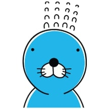
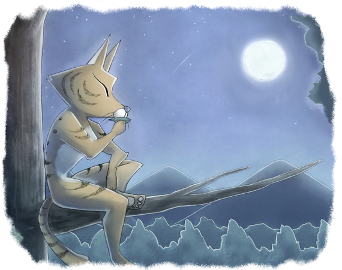
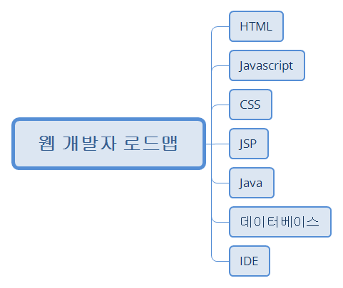

자기소개
이름 : 서강석
나이 : 32
대외적 좌우명 : 盡人事待天命
대내적 좌우명 : 오늘 하루만 대충 수습하자
취미
그대는 오는 아침에 스스로의 꿈에서 달아나지
그대의 마음속을 진탕쳤던 열망은 달콤할정도로 녹아내렸네
눈덮인 산속 안식을 찾는 새처럼 그대는 떠돌아다니네
이제 나는 여기 운명이 맺어준 인연들 속에서 살아가게 할 지,
아니면 또다시 잘게 부서진 사토속에서 흐트러질지는 알 수 없겠지
그대는 지는 밤하늘 속 스스로의 죄책감에게 걸어가지
그대의 심장에 끓어오르던 열정은 비참할정도로 쪼그라들었네
빛무리 도시 안에서 고개를 파묻길 원하는 개처럼 그대는 비틀거리네
이제 나는 여기 운명이 맺어준 인연들 속에서 살아가게 할 지,
아니면 또다시 피지 못한 꽃망울속에서 죽어갈지는 알 수 없겠지
시를 좋아하십니까? 저는 가끔가다 시를 끄적여대는걸 좋아해서 내킬때마다 쓰고있습니다.
위의 시는 사실상 이번 KH학원에 들어오기 며칠전에 쓰여진 시입니다.
마음속 불안감을 조금이나마 덜려고 만들었는데 이렇게 사용되네요.
앞으로 여러분들과 끝까지 자바 공부 과정을 함께하길 기원합니다.
로드맵
왼쪽의 이미지는 자바웹개발자로서 공부를 하기 위한 가장 기초적인 부분들이자 근간입니다.
동시에 앞으로 배워야 할 프로그래머로서의 공부에는 빙산의 일각에 지나지 않습니다.
큰 미래를 보기보단 향후 6개월내에 KH정보교육학원에서 풀스택 과정을 학습하며, 정보처리기사 시험을 준비할 계획입니다.
비전공자인 관계로 앞의 2가지 과정과 취업준비만으로도 빠듯하다 여겨집니다.
취업후에도 실무에 익숙해기위해 많은 시간을 할애하리라 생각합니다. 다만,
앞으로 배울 수 있다면 언어 쪽으로 파이썬(phtyon)을 배워보고 싶습니다. 자산운용 등 금융권 플랫폼개발에 각광을 받는 파이썬에 대해 기회가 된다면 도전해보고 싶습니다.